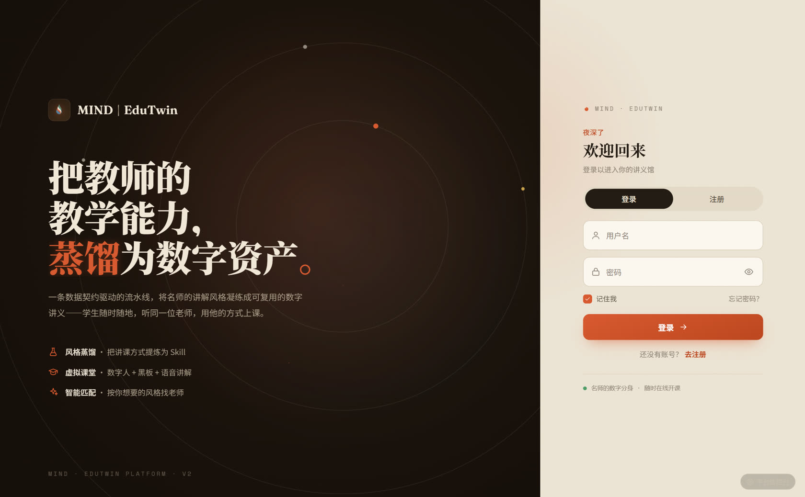
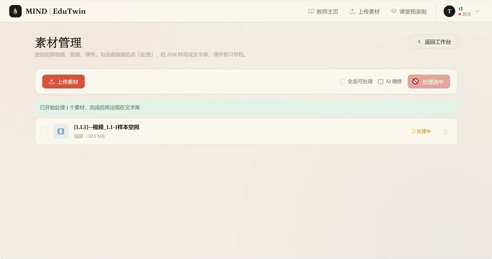
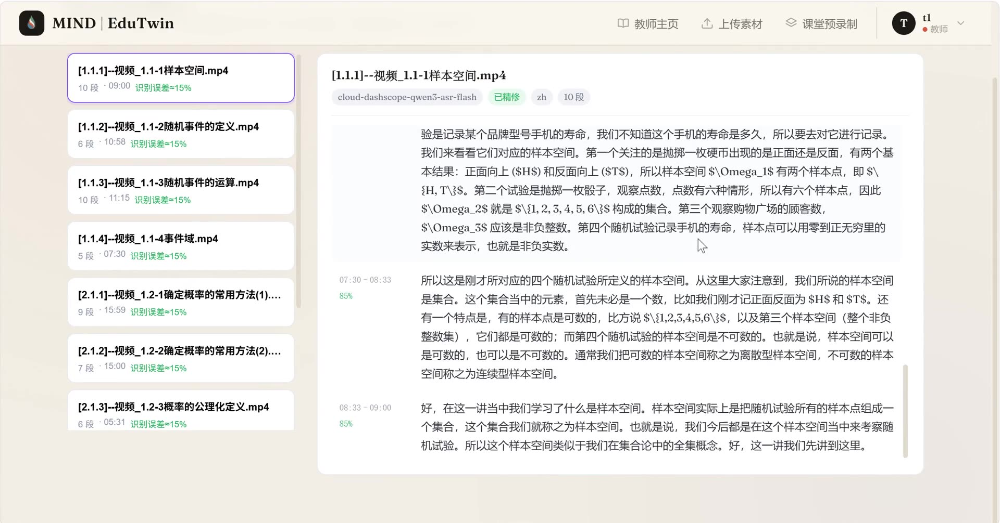
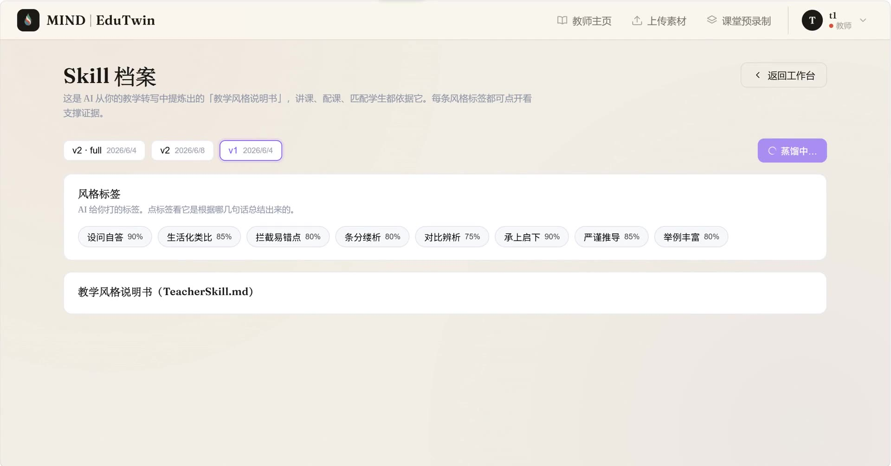
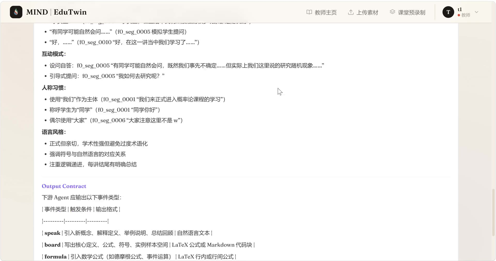
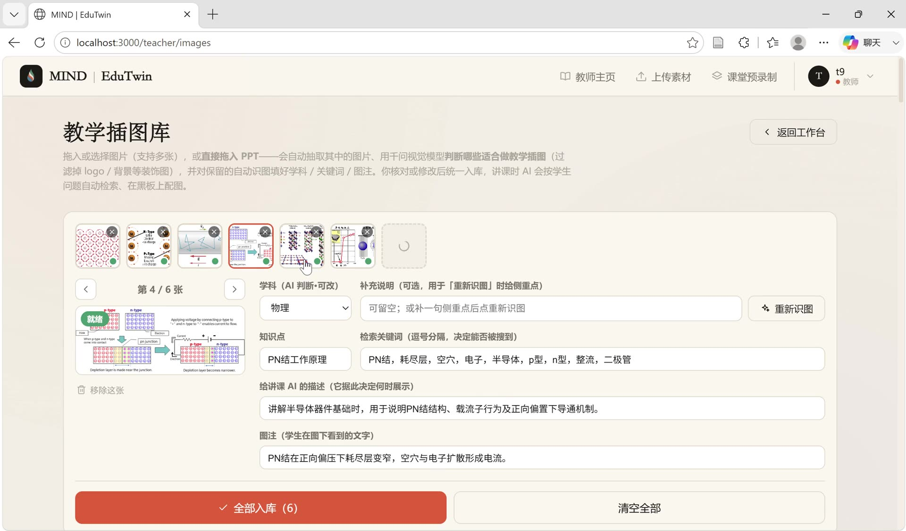
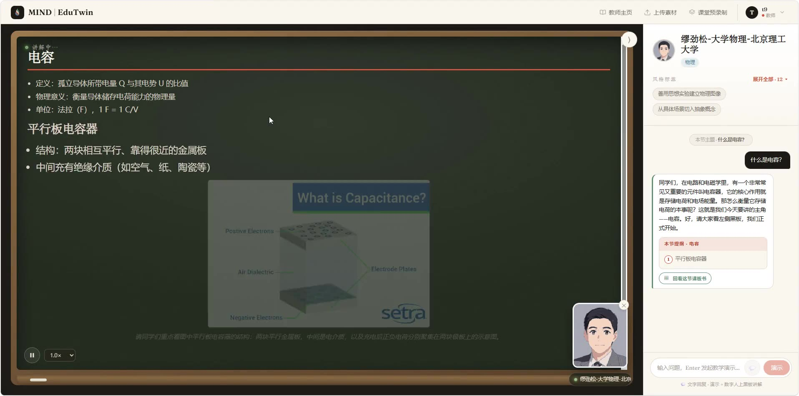

蒸馏讲解风格
从授课视频中提炼教师「怎么讲」：如何引入概念、建立直觉、设计板书、主动防错——产出七段契约的 TeacherSkill，而不只是知识问答。
EDUNUWA · TEACHING-STYLE DISTILLATION · MIT
WHAT IT DOES
从授课视频中提炼教师「怎么讲」：如何引入概念、建立直觉、设计板书、主动防错——产出七段契约的 TeacherSkill，而不只是知识问答。
LLM 流式产出教学事件，TTS 逐句合成并预取下一句：首句开口 ≈ 首句生成 + 首句合成。黑板、公式、插图与语音同步推进。
学生评价通过「文本梯度」回流：众评风格标签按确定性公式累积置信度，Skill 修订经教师确认后生效——数字分身越用越像。
PIPELINE
六个模块通过「文件路径 + 函数调用」解耦，每个交接文件都有入库的 JSON Schema。
transcript.jsonskill_profile.jsonevents.jsonM6 平台层把 M1–M5 缝合成完整产品（Flask + React）
speakboardformulatablepausequizimage
THE PRODUCT
从登录到课堂的完整产品体验——温暖纸质的设计语言，承载一条严肃的技术链路。

LIVE DEMOS
系统真实运行录屏：从教师上传素材，到风格蒸馏，再到学生在虚拟课堂里提问听课。

▶
▶
▶
▶
▶
▶CORE FEATURES
教学理念 / 讲解模式 / 板书策略 / 语言风格……蒸馏产物是结构化契约，直接注入每一次讲课的 prompt。
SSE 事件流 + 逐句 TTS 预取 + 双槽 iframe 推流，不等全文生成，开口即讲。
GPT-SoVITS 少样本克隆教师音色；无 GPU / 无模型时自动降级 edge-tts，普通笔记本可跑。
图库检索 → LLM 按 ID 引用 → 防幻觉闸门定稿 URL，配图零额外首句延迟。
按姓名找名师，或按风格指纹匹配「适合你的讲法」——同时承载名师效应与长尾发现。
推荐 → 反馈 → 归因 → 标签晋升的完整闭环；置信度由确定性公式计算，不采 LLM 拍脑袋。
GET STARTED
git clone https://github.com/MikeMengTR/EduNUWA.git
cd EduNUWA
pip install -r requirements.txt
cp .env.example .env # 填入 DEEPSEEK_API_KEY
python modules/M6_platform/backend/app.py
# 另一个终端：
cd modules/M6_platform/frontend && npm install && npm run dev仓库内置 12 位匿名化示例教师与自制教学图库，无重型模型也能体验完整链路（TTS 自动走 edge-tts）。